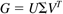
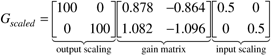
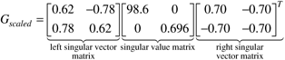
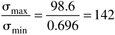

| [ Team LiB ] |
|
M13.6 Singular Value AnalysisThe SVD can be used to predict directional sensitivity of a process. The process gain matrix is decomposed into three matrices,  where U is the left singular vector matrix, S the diagonal matrix of singular values, ordered, and V the right singular vector matrix. The left and right singular vector matrices are both orthonormal matrices; that is, each column of the matrix is orthogonal to all other columns and the columns each are unit length. The diagonal singular value matrix is ordered so that the largest singular value is in the (1,1) position. Note that the standard notation for SVD is to use U to represent the left singular vector matrix. Please do not confuse this with the u vector commonly used to represent the vector of manipulated inputs. When performing a singular value analysis, it is important to scale the inputs and outputs to cover the same range. For this system, we assume that we desire the output compositions to vary by only ±0.01 mole fraction. Also, we assume that the inputs vary by ±0.5 kmol/minute. The scaled process gain matrix is then  The MATLAB SVD analysis of this system is shown below. MATLAB SVD Analysis
» g = [0.878 -0.864;1.082 -1.096];
» gs = [100 0;0 100]*g*[0.5 0;0 0.5]
gs =
43.9000 -43.2000
54.1000 -54.8000
» [u,s,v] = svd(gs)
u =
0.6246 -0.7809
0.7809 0.6246
s =
98.6043 0
0 0.6957
v =
0.7066 -0.7077
-0.7077 -0.7066
» cond(gs)
ans = 141.7320
The SVD of the scaled gain matrix is  The condition number is  which indicates that this is an ill-conditioned system. The first column of the left singular vector matrix indicates that the most sensitive output direction is a simultaneous change in the distillate and bottoms composition in the same direction. The first column of the right singular vector matrix indicates that the strongest input direction is to change reflux and vapor boil-up by the same magnitude, but in different directions (increase reflux and decrease vapor boil-up, or vice versa). Physically, this is because these types of changes have a greater effect on the overall material balance around the column. We can view these SVD results to understand both open-loop and closed-loop effects. Open-loop. An input in the most sensitive direction will have a large-magnitude effect on the outputs. This means that an input in the most sensitive direction has a high "gain" effect on the output; that is, a small input change causes a large output change. Similarly, an input in the least sensitive direction (column 2 of the V matrix) has very little effect on the output. These effects are illustrated by the open-loop responses in Figures M13-4 and M13-5. Figure M13-4 is a forcing in the most sensitive input direction, while Figure M13-5 is a forcing in the least sensitive direction. Closed-loop. A desired output change in the most sensitive output direction will require an input in the most sensitive input direction, and these are associated with the largest singular value. This means that a setpoint change in the most sensitive output direction will not require as large a magnitude input change as a setpoint change in the least sensitive output direction. It should be noted that the response shown in Figure M13-7 is based a setpoint change in the most sensitive output direction, which requires little manipulated variable action. The reader should show that a setpoint change in the weakest direction will yield a slow response, similar to Figure M13-6. |
| [ Team LiB ] |
|